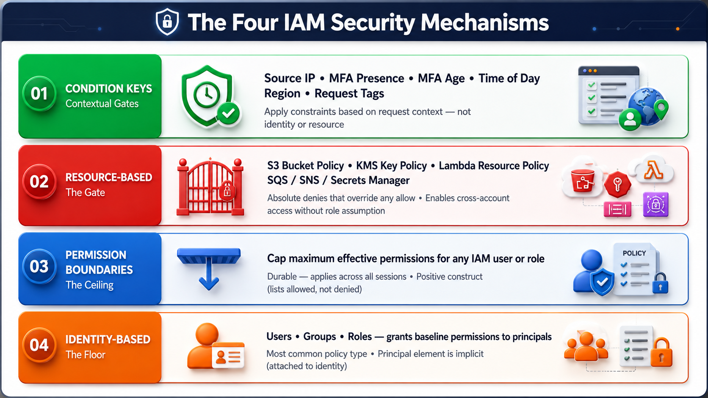

If IAM were a building, identity-based policies are your keycard — they say what you're allowed to do. But what stops a junior admin from accidentally giving someone too much access? What stops a shared vendor from peeking at the wrong customer's files? And how do you make sure that even if someone steals your login session, they can't delete your production database?
Those are exactly the problems this session solves. We're covering the advanced layer of IAM — the mechanisms that sit above ordinary identity policies and enforce hard limits, scoped assumptions, and real-time security decisions.

Figure 1: The four IAM security mechanisms and their roles in the overall authorization stack
⚡ What you'll master in these two sessions:
- Permission boundaries — the ceiling that caps what any identity can ever do
- Session policies — the per-call scope you pass directly at role assumption time
- Cross-account access — the two-policy handshake between source and destination accounts
- MFA condition keys — the difference between session-level MFA and fresh-MFA enforcement
These topics map directly to the SAA-C03 domain Security (statement 1.1: Authentication and Authorization) and appear in some of the hardest multi-select scenario questions on the exam. Get these right and you're set for a significant portion of security questions.
📋 Prerequisites from earlier sessions:
- IAM users, groups, and roles — how they differ
- Identity-based policies and policy structure (Effect, Action, Resource, Condition)
- STS (Security Token Service) — how it issues temporary credentials
- The concept of role assumption — what it means to "assume" a role